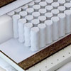

Руководство по подбору матраса для чайников
Если вы совсем не имеете представления как подобрать ортопедический матрас, мы придумали для вас это нехитрое "руководство по подбору матраса для чайников". Здесь собраны советы по выбору параметров матраса, основываясь на многолетнем опыте работы с нашими покупателями.

1. Размер матраса
Одним из важнейших параметров является размер. Чтобы правильно определить размер матраса, нужно измерить размер спального места. Они всегда совпадают. Не путайте размер габаритов кровати и размер спального места. Спальное место - это та ниша в кровати, куда вы в последствие поместите матрас.
2. Жесткость матраса
Важный параметр в подборе. Если вы не определились на каком матрасе, мягком или жестком вам приятнее спать, то отталкивайтесь при выборе жесткости от вашего веса. Если вы весите меньше среднего, то смело берите мягкий матрас, ваш небольшой вес не сможет сильно продавить его, поэтому матрас прослужит долго и спать на нем будет комфортно. Людям среднего веса подойдет любой матрас средней жесткости. Если ваш вес превышает 90 кг, обратите внимание на жесткие модели, они окажут должную поддержку мышцам и позвоночнику и прослужат долго.
Не забывайте, что пожилые люди предпочитают мягкие матрасы, они способствуют расслаблению и быстрому восстановлению во время сна. Детям и подросткам покупайте жесткие матрасы, на основе сизаля или кокоса. Жесткие матрасы способствуют правильному формированию осанки и используются для профилактики сколиоза.
| Рост, см | Вес, кг | ||||||
| Меньше 50 | 50-55 | 55-65 | 65-75 | 75-85 | 85-95 | Больше 95 | |
| Меньше 155 | Средне-жесткий | Средне-жесткий | Средне-жесткий | Жесткий | Жесткий | Жесткий | Жесткий |
| 155-165 | Магкий | Средне-жесткий | Средне-жесткий | Средне-жесткий | Жесткий | Жесткий | Жесткий |
| 165-175 | Магкий | Средне-жесткий | Средне-жесткий | Средне-жесткий | Средне-жесткий | Жесткий | Жесткий |
| 175-185 | Магкий | Средне-жесткий | Средне-жесткий | Средне-жесткий | Средне-жесткий | Жесткий | Жесткий |
| 185-195 | Магкий | Средне-жесткий | Средне-жесткий | Средне-жесткий | Средне-жесткий | Средне-жесткий | Жесткий |
| Больше 195 | Магкий | Магкий | Магкий | Средне-жесткий | Средне-жесткий | Средне-жесткий | Жесткий |
3. О чем говорит величина - нагрузка на одно спальное место?
Имеется ввиду максимальный вес одного спящего, который будет спать на матрасе. Такую нагрузку выдерживает матрас без потери качества и ортопедических свойств. Если брать двуспальный матрас, то эту величину можно умножить на два, так как спальных мест в двуспальном матрасе два.
4. Основание матраса
Матрасы делятся на два основных типа: пружинные и беспружинные. Пружинные делятся на зависимые и независимые. Разберемся подробнее.
-

Зависимый пружинный блок "Боннель"
Пружины непрерывного плетения, связанные между собой, которые имеют воздействие друг на друга.
Преимущества этого пружинного блока в его низкой цене, надежности и простоте конструкции. Но он не обладает достаточными ортопедическими свойствами и при больших и частых нагрузках возможно возникновение "эффекта гамака".
-
Независимые пружины
Современная конструкция, все пружины находятся в отдельных чехлах и не воздействуют друг на друга. Таким образом, нагрузка распределяется точечно, возникает высокий анатомический эффект. Такие матрасы прочные, выдерживают высокие нагрузки и прослужат вам долго, но по сравнению с зависимыми пружинами стоят дороже.
-

Беспружинные матрасы
Представляют собой многослойные матрасы-пироги или монолиты из одного наполнителя. Беспружинные матрасы не имеют внутренних полостей, поэтому не скапливают пыль. Они долговечные, потому что не имеют механических элементов (пружин). Они не обладают "пружинящим эффектом" и стоят дороже пружинных, так как изготавливаются только из наполнителей.
5. Разновидности независимых пружинных блоков.
-
Независимый пружинный блок TFK
Оптимальное сочетание цены и качества. Блок содержит 512 пружин на спальное место или 256/м².
-

Независимый пружинный блок S1000 (Мультипакет)
Состоит из большего количества пружин на спальное место (1000 штук на спальное место или 500/м²). Более выраженный ортопедический эффект. Такой матрас выдерживает повышенные нагрузки.
-

Независимый пружинный блок S2000 (Микропакет)
Матрасы с этим пружинным блоком относятся к классу бизнес или премиум. Количество микропружин на спальное место - 2000 или 1000/м². Обладает выраженным, усиленным анатомическим эффектом и выдерживает высокие нагрузки.
-

Независимый пружинный блок Duet (DS)
Пружинный блок из "сдвоенных пружин" (малая пружина в большой). Уникальная конструкция для пар с большой разницей в весе. Тяжелый партнер не будет проваливаться и утопать в матрасе, так как обе пружины будут работать на его вес в полную силу, а легкий партнер не будет скатываться к тяжелому, так как нагрузка распределяется максимально точно, а пружины не связаны между собой.
-
Независимые блоки "Песочные часы"
Производителя Аскона - запатентованные пружинные блоки Аскона имеют пружины зауженные к центру и расширенные по краям. Таким образом, достигается высокий ортопедический эффект.
-

Многозональные пружинные блоки
Наиболее анатомически ориентированные и комфортные. Они разделены на специальные зоны (оптимальным считается разделение от 5 до 7 зон), которые усилены, как правило, в поясничном и плечевом отделах. Отдых на таком матрасе комфортный и здоровый.
5. Наполнители матрасов
Материалы, из которых делают матрасы могут быть натуральными и синтетическими. Давайте разбираться, что к чему.
Натуральные (Экологически чистые) наполнители-
Натуральный перфорированный латекс
Мягкий и эластичный материал, изготовленный из млечного сока дерева гевеи, путем вспенивания. Он имеет производственную перфорацию и отлично вентилируется. Латекс не впитывает запахи и не пахнет. Он упругий и очень комфортный для сна. Под воздействием температуры человеческого тела подстраивается под контуры спящего, способствует расслаблению и восстановлению. Очень долговечный.
-
Кокосовая койра
Натуральный, экологически чистый наполнитель, изготавливается из кокосового волокна и пропитывается натуральным латексом для прочности и долговечности. Кокосовая койра - жесткий наполнитель, его часто используют для детских матрасов, он способствует правильному формированию осанки и его применяют для профилактики сколиоза. Обладает выраженными ортопедическими свойствами, антибактериальный, дышащий.
-
Сизаль (или кактусовая койра)
Изготавливается из натуральных листьев кактуса Агавы, умеренно жесткая и ортопедичная. Отлично проветривается, не скапливает пыль, не впитывает запахи. Сизаль довольно дорогостоящий, поэтому его часто используют для матрасов комфорт класса и класса премиум.
-

Пенополиуретан
Пенополиуретан (или поролон, он же ППУ) - самый часто используемый в мебельном производстве материал. Он недорогой, долговечный и безопасный. Из-за своей микропористой структуры отлично проветривается, не задерживает влагу и запахи.
-

Искусственный латекс
Это пенополиуретан повышенной плотности. Материал по свойствам максимально точно напоминающий натуральный латекс. Дышащий, износоустойчивый, анатомичный.
-

Меморикс
Это уникальная пена с эффектом памяти формы. Реагирует на температуру человека и принимает форму тела максимально точно, обволакивает его. Создает ощущение "невесомости" и комфорта. Меморикс расслабляет мышцы и не пережимает кровеносные сосуды. Мягкий наполнитель, дорогой.
-
Экопена
Это современный пенополиуретан. Пена имеет микропоры, через которые отлично дышит. Гипоалергенный материал, мягкий, эластичный, долговечный.
-

Холлофайбер и струттофайбер
Волокнистые, наполовину натуральные наполнители. Волокна по структуре напоминают микропружины, поэтому обладают отличным ортопедическим эффектом. Жесткость средняя. Наполнители долговечные, гипоалергенные, дышащие.
-

Бикокос
На половину натуральный наполнитель из синтетического волокна и натуральной кокосовой койры, пропитанный латексом для прочности и долговечности. Один из самых упругих и жестких наполнителей, гипоалергенный, износоустойчивый.
Чтобы не купить "кота в мешке" обратите внимание на следующие рекомендации
- Приобретайте матрас только у официальных представителей или у производителя, обращайте внимание на лейбл фабрики, сопровождающий пакет документов (чек, гарантия, товарная накладная). Покупая матрас в нашем магазине, сопутствующие документы прикладываются к матрасу автоматически.
- Еще раз про размер! измеряйте спальное место, а не габаритный размер кровати. Размер спального места кровати или дивана соответствует размеру вашего будущего матраса. Матрас можно изготовить любого нестандартного размера с шагом в 1 см.
- Обращайте внимание на чехол и его состав при выборе модели матраса. Объемная стежка продлит срок службы чехла, а также придаст комфорта, не меняя при этом жесткости спального места.
- Если вы человек "сомневающийся" и следуете правилу "доверяй, но проверяй", то закажите дополнительную смотровую молнию в чехле матраса. Это позволит сверить состав и спать спокойно. Почти на всех моделях в нашем магазине эта опция предоставляется бесплатно.
- Защитный наматрасник продлит срок службы матраса и защитит его от внешних воздействий, таких как пыль, шерсть животных, грязь и даже влаги. Не пренебрегайте приобретением защитного наматрасника.
Если у вас до сих пор остались вопросы и вы все еще "человек сомневающийся", звоните нашим опытным консультантам и они с удовольствием и профессионализмом подберут лучший матрас для вас, ваших детей и родителей!